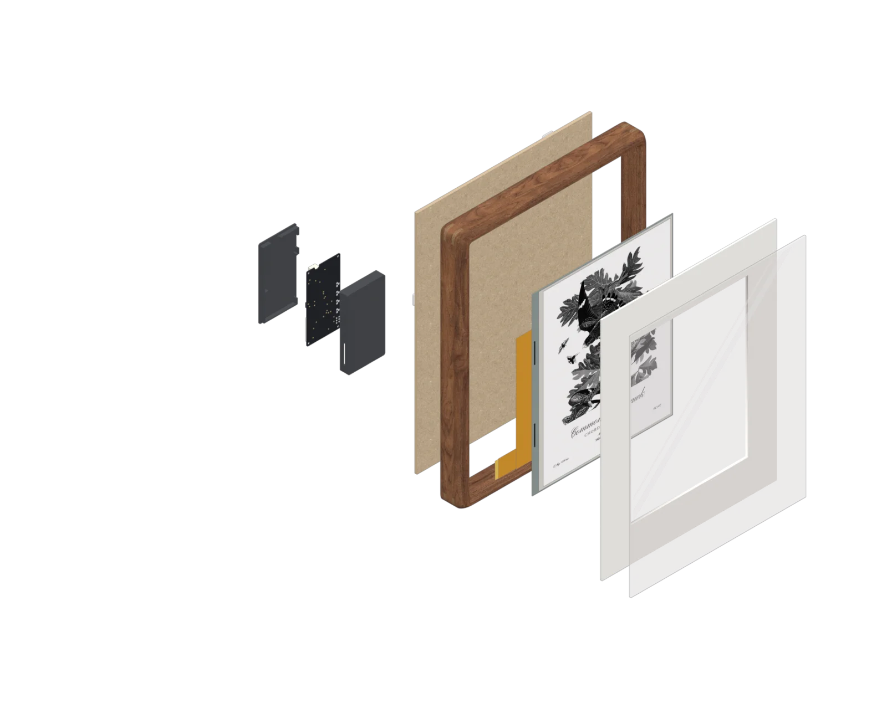
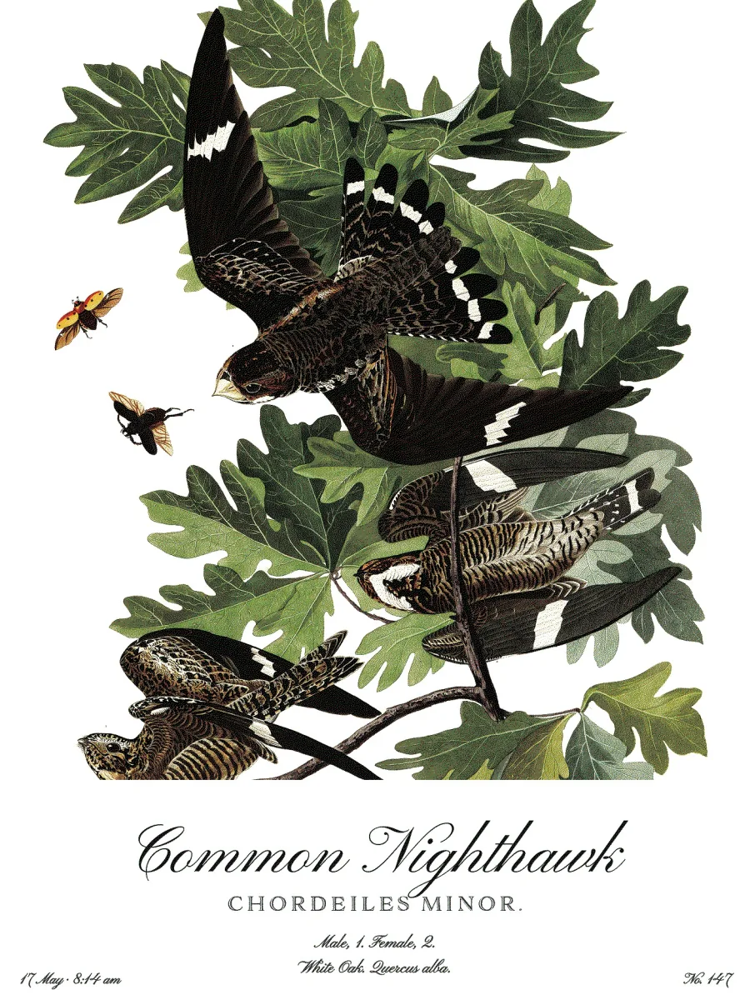
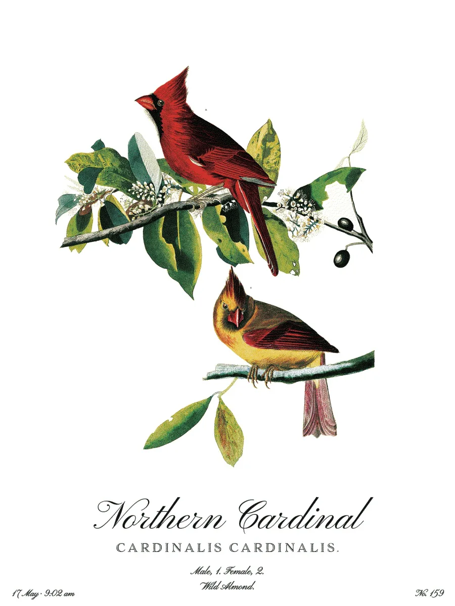
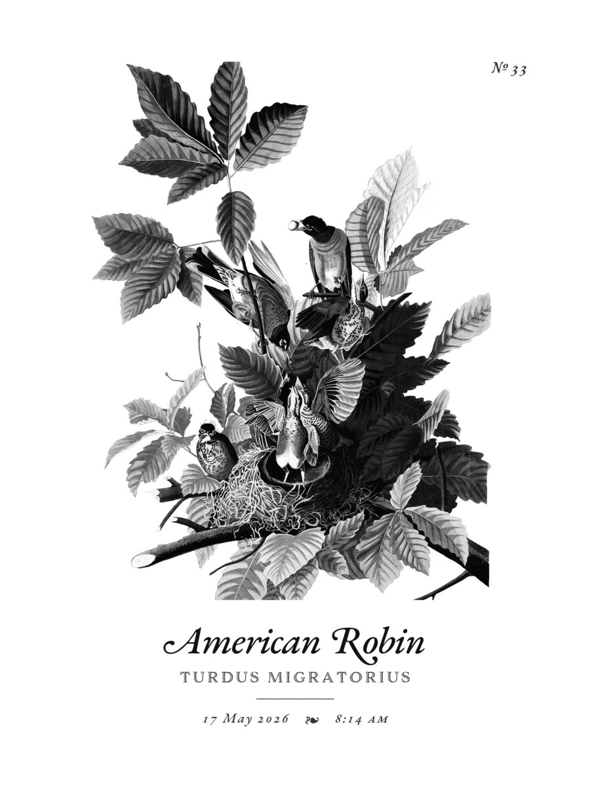
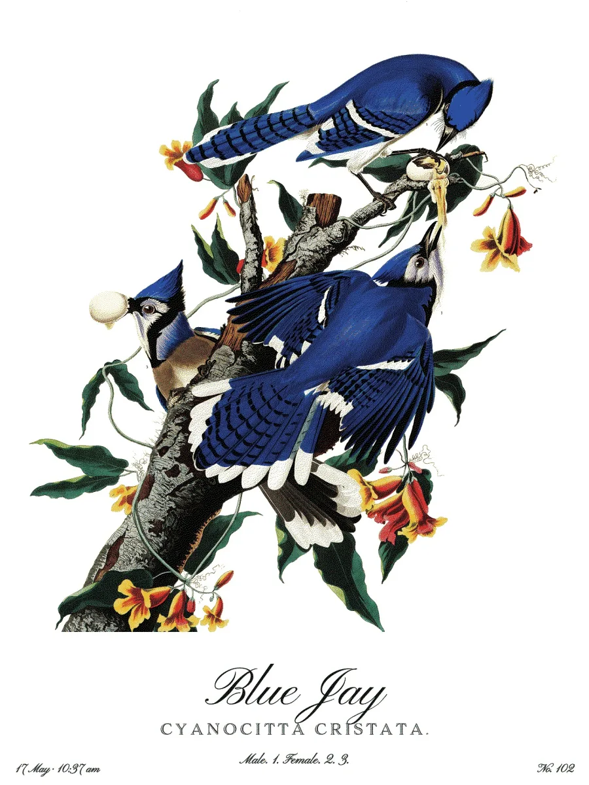
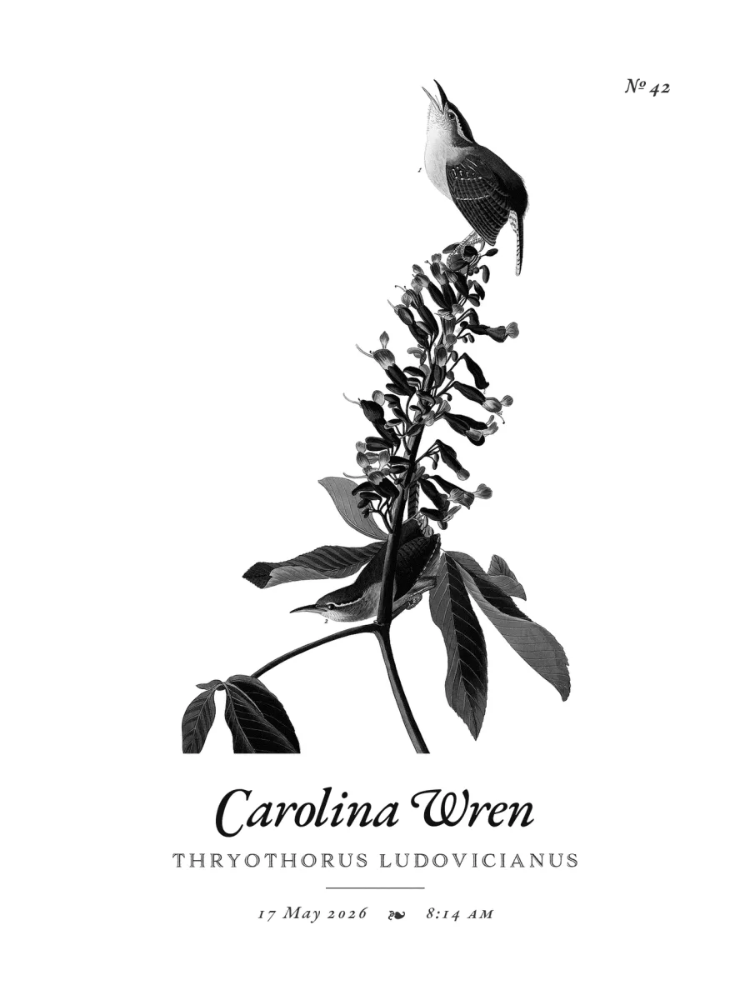
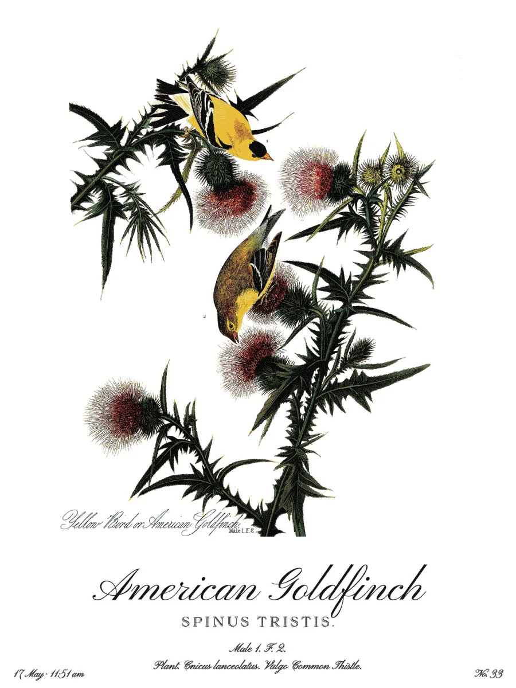
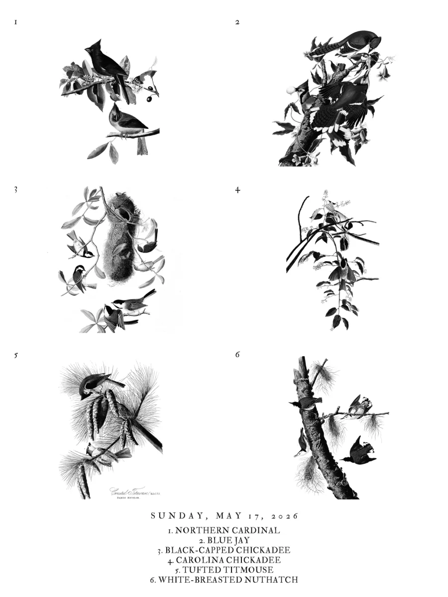

10-inch · sixteen grays
Sixteen shades of gray on a 10.3-inch display, as crisp as an engraving.

No camera. No app. No subscription. Real paintings by a human hand, not AI.

A BirdWeather station near you, or your own BirdNET-Go box on the porch.
One of 435 illustrations from The Birds of America (1827–38), matched to the species heard.
E-paper holds the picture without power. The frame wakes, updates and sleeps, and runs for months on a charge.
Each illustration carries its species, its Latin name and Audubon's own legend. At night, the day's species appear together on one sheet.







10-inch · sixteen grays
Sixteen shades of gray on a 10.3-inch display, as crisp as an engraving.
13-inch · six inks
Six inks on a 13.3-inch display, in Audubon's own colors.
BirdNET-Go box. Add a BirdNET-Go box to detect the species in your own yard instead of at a nearby station.
Hosting is included with every frame.
Pre-orderFrom BirdWeather, a public network of listening stations. You choose a station near you when you set up the frame. With a BirdNET-Go box, they come from a microphone at your own home instead.
Yes. The frame joins your Wi-Fi to fetch each new illustration. After setup, it needs nothing else.
Months between charges, depending on how often it updates. It charges over USB-C, and it can also stay plugged in.
Audubon painted 435 species, which covers most common species in North America. For the rest, the frame shows the species' name, set in the same type as the illustrations. You can choose to have an AI draw an illustration in Audubon's style instead, using your own OpenAI key. It's off by default, and every AI illustration is marked ✦.
Hosting is the service that picks each illustration and sends it to your frame. It's included with every frame, with no subscription. If you'd rather run it yourself, the software is open source.
The frame has no camera and no microphone. It only receives pictures. Your account holds your frame's settings and the species it has shown. Nothing is sold or shared.
Featherframe is open source. Build one from a Seeed ePaper kit and run the server beside your BirdNET.